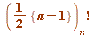

A very, very fast introduction to Gauss factorials
A very brief word about our (Cosgrave-Dilcher) Gauss factorial studies. These were motivated by an entirely simple philosophy, which I will illustrate by a simple example:
- Nobody appeared to have used Gauss' binomial to derive any consequences, and I will give to illustrative examples to show what we derived from it (I could give many examples, but these two should suffice). First recall that we know from Lagrange examples of primes for which:
 (3, 23, 31, 59, 71, 83, ... )
(3, 23, 31, 59, 71, 83, ... )
(7, 11, 19, 43, 47, 67, 79, ... )
(5, 13, 17, 29, ... )
(the latter in fact, for ALL primes (mod 4))
In the spirit of these Lagrange examples, we established the following as consequences of Gauss' binomial coefficient congruence:
- For primes
 (mod 4), we have the following (note that it's quarter factorials):
(mod 4), we have the following (note that it's quarter factorials):
holds only for the prime 
is impossible
is impossible
and, furthermore
is impossible
but (quite a surprise!, and highly relevant for a later paper of ours, our Acta Mathematica Hungarica one, in which we introduced the notion of a Gauss prime)
... (8) (just for reference below)
holds for some primes, the first five examples of which are 17, 241, 3361, 46817, 652081, and the next ones have 150, 229, 339, 401, 594, 806 decimal digits (these are all those with fewer than 1000 decimal digits; we found all with up to 100,000 decimal digits), and these primes have a remarkable structure; they are precisely the primes in the sequence, where
- , and , for
Thus , , etc
Having coffee one morning in October 2007 - staying in Jon Borwein's home on my second research visit to Karl, and while Karl was away on CMS business - Jon asked me to tell him something of what Karl and I were doing ... I mentioned a number of things (from a vast list), and the latter was one of them. When I told Jon the latter result, concerning the solutions of (8), he remarked that he was just about to bring out - with his co-author David Bailey - the second edition of their book on Mathematics by Experiment, and that he had been on the lookout for things that were "new, beautiful and exciting", and that the above was exactly what he wanted... could he include it in their book? Answer: Yes! And Jon did.
Those latter primes - they are the Gauss primes (of 'level' 4) which we introduced in our paper:
THE GAUSS-WILSON THEOREM FOR QUARTER INTERVALS, Acta Mathemetica Hungarica, Vol. 142 (2014), no. 1, 199-230
play a fundamental role in our study of certain Gauss factorial congruences.
- Now, a motivation of ours was to consider this kind of question (in the spirit of the Gauss-Wilson theorem), namely ask:
What is the outcome if one replaces prime  - in the just seen examples - with composite
- in the just seen examples - with composite  ?
?
In other words, are there solutions of
... (Gauss-half-factorial-congruence)
where the object on the left hand side is to be interpreted as being
- the ordinary factorial , BUT with every integer OMITTED from the product that is divisible by a prime factor of
 itself
itself
Thus, for example, if (which has prime factors 3 and 5 only) then we understand  to mean the product:
1 . 2 . 4 . 7 (having omitted 3, 5, and 6 from the original product)
The complete answer is given in our very first paper - EXTENSIONS OF THE GAUSS-WILSON THEOREM - it's paper #1
at http://johnbcosgrave.com/publications.php
An easily understood sample theorem from that paper is: if an odd integer  has at least three distinct prime factors then the above Gauss-half-factorial-congruence holds.
has at least three distinct prime factors then the above Gauss-half-factorial-congruence holds.
See the early examples in the following table (the first of which you might try to verify by hand):
| > | L := []:
for n from 3 by 2 to 1000 do if nops(factorset(n)) > 2 then L := [op(L), n] fi od: for n in L do Ghf||n := PI(n, 2, 1): ### 'Ghf' for Gauss half-factorial od: print(``); print(array([ ['n', ``, ``, factored('n'), ``, ``, '({n-1}/2)[n]!'], seq([n, ``, ``, ifactor(n), ``, ``, Ghf||n], n = L)])): print(``); lprint(`The final column show the residue of GAUSS FACTORIAL ({n-1}/2)[n]! mod n.`); |
| `The final column show the residue of GAUSS FACTORIAL ({n-1}/2)[n]! mod n.` |
| > |
Here are some having at least four distinct prime factors (this computation taking less than one second):
| > | L := []:
for n from 3 by 2 to 4000 do if nops(factorset(n)) > 3 then L := [op(L), n] fi od: for n in L do Ghf||n := PI(n, 2, 1): ### 'Ghf' for Gauss half-factorial od: print(``); print(array([ ['n', ``, ``, factored('n'), ``, ``, '({n-1}/2)[n]!'], seq([n, ``, ``, ifactor(n), ``, ``, Ghf||n], n = L)])): print(``); lprint(`The final column show the residue of GAUSS FACTORIAL ({n-1}/2)[n]! mod n.`); |
| `The final column show the residue of GAUSS FACTORIAL ({n-1}/2)[n]! mod n.` |
| > |
| > |